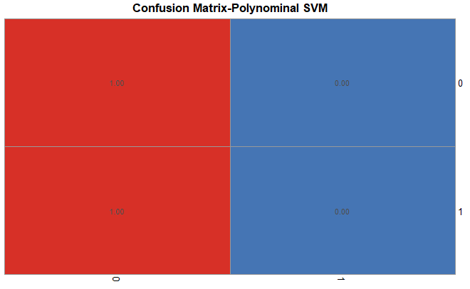
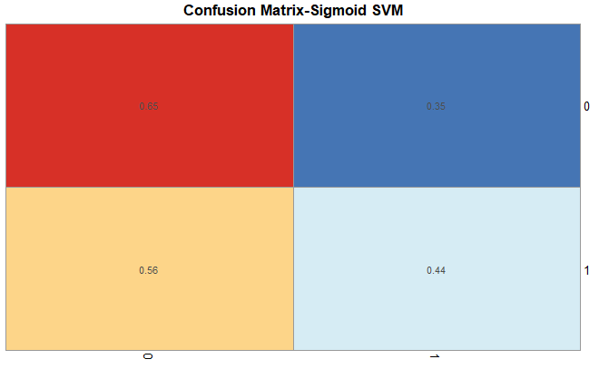
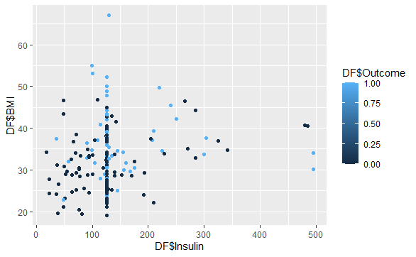
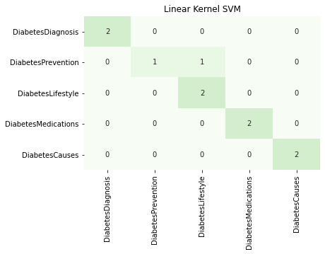
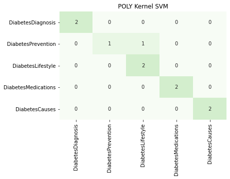
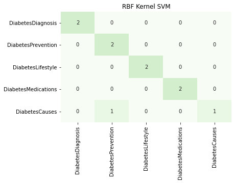

R part
The data I used for this part was downloaded from the Kaggle. The record data has 4 variables for predicting whether a patient has diabetes and the 'Outcome' is the label.
Here you can download my record data set and code:
SVM_R.RI used R to create SVM models with three 3 different kernels using my mixed record data.
1. Lineaer Kernel

For linear kernel the hyperparameter 'coef0' is checked. A loop is used to evaluate the change of accuracy under different value. According to the result, the accuracy remains the same for all coef0, which is 0.90.
A percentage confusion matrix is draw using the prediction and the test dataset to check the performance on each label. From the confusion matrix we can see that the false negative rate is 67%, which too high. So linear kernel is not an ideal choice.
2. PolyNominal Kernel

For polynominal kernel the hyperparameter 'degree' is checked. A loop is used to evaluate the change of accuracy under different value. According to the result, the accuracy is the highest when degree is 0.5.

A percentage confusion matrix is draw using the prediction and the test dataset to check the performance on each label. From the confusion matrix we can see that the false negative rate is 100%, which too high. So polynominal kernel is also a bad choice.
3. Sigmoid Kernel

For sigmoid kernel the hyperparameter 'gamma' is checked. A loop is used to evaluate the change of accuracy under different value. According to the result, the accuracy is the highest when gamma is approximate to be 0.

A percentage confusion matrix is draw using the prediction and the test dataset to check the performance on each label. From the confusion matrix we can see that the false negative rate is 56%, which too high. So sigmoid kernel is not an ideal choice, but better than the other two.

Tech Conclusion: By looking at the relationship between two any variables we can understand why the accuracy of these SVM models is too low. Here I only put one graph.
Non-tech Conclusion: There is a lack of features to distinguish patient with diabetes just using these four vairables. The original dataset has 8 variables. If using more variables to build the model and predict, the accuracy may be improved.
```{r}
library(e1071) # for machine learning methods
#install.packages("mlr")
library(mlr)
# install.packages("caret")
library(caret)
#install.packages("naivebayes")
library(naivebayes)
library(datasets)
library(ggplot2)
library(MASS)
```
```{r}
setwd("E:/GU/501/NB_SVM")
## Read in the dataset
DataFile="SVMdata.csv"
head(DF=read.csv(DataFile))
```
```{r}
plot(DF)
qplot(DF$Insulin,DF$BMI,data = DF,color=DF$Outcome)
```
```{r}
## MAKE test and train data
str(DF)
(Size = (as.integer(nrow(DF)/4))) ## Test will be 1/4 of the data
(SAMPLE = sample(nrow(DF), Size, replace = FALSE))
(DF_Test=DF[SAMPLE, ])
(DF_Train=DF[-SAMPLE, ])
## REMOVE the labels and KEEP THEM
########### REMOVE AND SAVE LABELS...
## Copy the Labels
(DF_Test_Labels = DF_Test$Outcome)
## Remove the labels
DF_Test_NL=DF_Test[ , -which(names(DF_Test) %in% c("Outcome"))]
## Check size
(ncol(DF_Test_NL))
## Train...--------------------------------
## Copy the Labels
(DF_Train_Labels = DF_Train$Outcome)
## Remove the labels
DF_Train_NL=DF_Train[ , -which(names(DF_Train) %in% c("Outcome"))]
## Check size
(ncol(DF_Train_NL))
```
```{r}
## Polynomial Kernel...
poly_svm_accuracy=c()
for(degree in seq(0,4,0.5)){
SVM_fit_P =svm(Outcome~.,data=DF_Train,kernel='polynomial',type='C-classification',degree=degree)
pred_P = predict(SVM_fit_P, DF_Test_NL)
poly_svm_accuracy=c(poly_svm_accuracy,sum(DF_Test$Outcome==pred_P)/length(pred_P))
}
plot(seq(0,4,0.5),poly_svm_accuracy,'l',xlab='Degree',main='Poly Degree-Accuracy')
```
```{r}
##from the graph we can see that accuracy is the highest when degree=0.5
SVM_fit_P = svm(Outcome~., data=DF_Train,
kernel="polynomial", type='C-classification',degree=0.5)
##Prediction --
(pred_P = predict(SVM_fit_P, DF_Test_NL, type="class"))
##Accuracy
poly_svm_accuracy=sum(DF_Test$Outcome==pred_P)/length(pred_P)
poly_svm_accuracy
```
```{r}
## Confusion Matrix
library(pheatmap)
CM1 = table(DF_Test_Labels,pred_P)
original_count=table(DF_Test_Labels)
for (i in 1:nrow(CM1)) {CM1[i,]=CM1[i,]/original_count[i]}
pheatmap(CM1,cluster_cols=F,cluster_rows=F,display_numbers=T,number_format = "%.2f",legend=F,main='Confusion Matrix-Polynominal SVM')
```
```{r}
## Linear Kernel...
linear_svm_accuracy=c()
for(coef0 in seq(0,4,0.5)){
SVM_fit_L =svm(Outcome~.,data=DF_Train,kernel='linear',type='C-classification',coef0=coef0)
pred_L = predict(SVM_fit_L, DF_Test_NL)
linear_svm_accuracy=c(linear_svm_accuracy,sum(DF_Test$Outcome==pred_L)/length(pred_L))
}
plot(seq(0,4,0.5),linear_svm_accuracy,'l',xlab='Coef0',main='Linear coef0-Accuracy')
```
```{r}
##from the graph we can see that linear accuracy remains the same at all Coef0
SVM_fit_L = svm(Outcome~., data=DF_Train,
kernel="linear", type='C-classification',coef0=2)
##Prediction --
(pred_L = predict(SVM_fit_L, DF_Test_NL, type="class"))
##Accuracy
linear_svm_accuracy=sum(DF_Test$Outcome==pred_L)/length(pred_L)
linear_svm_accuracy
```
```{r}
##Confusion Matrix
CM2 = table(DF_Test_Labels,pred_L)
original_count=table(DF_Test_Labels)
for (i in 1:nrow(CM2)) {CM2[i,]=CM2[i,]/original_count[i]}
pheatmap(CM2,cluster_cols=F,cluster_rows=F,display_numbers=T,number_format = "%.2f",legend=F,main='Confusion Matrix-Linear SVM')
```
```{r}
## Fit Sigmoid_Svm...
sig_svm_accuracy=c()
for(gamma in seq(0,1,0.2)){
SVM_fit_S =svm(Outcome~.,data=DF_Train,kernel='sigmoid',type='C-classification',gamma=gamma)
pred_S = predict(SVM_fit_S, DF_Test_NL)
sig_svm_accuracy=c(sig_svm_accuracy,sum(DF_Test$Outcome==pred_S)/length(pred_S))
}
plot(seq(0,1,0.2),sig_svm_accuracy,'l',xlab='gamma',main='Sigmoid gamma-Accuracy')
```
```{r}
SVM_fit_S=svm(Outcome~.,data = DF_Train, kernel='sigmoid',type='C-classification',gamma=0.6)
##Prediction --
(pred_S = predict(SVM_fit_S, DF_Test_NL, type="class"))
##Accuracy
sigmoid_svm_accuracy=sum(DF_Test$Outcome==pred_S)/length(pred_S)
sigmoid_svm_accuracy
```
```{r}
##Confusion Matrix
CM3 = table(DF_Test_Labels,pred_S)
original_count=table(DF_Test_Labels)
for (i in 1:nrow(CM3)) {CM3[i,]=CM3[i,]/original_count[i]}
pheatmap(CM3,cluster_cols=F,cluster_rows=F,display_numbers=T,number_format = "%.2f",legend=F,main='Confusion Matrix-Sigmoid SVM')
Python part
I gathered my text data from ClinicalTrials API with 5 keywords related to diabetes and each keyword is a label in my data set.

I used Python to create SVM models with three 3 different kernels using my mixed record data.
1. Lineaer Kernel
.jpg)
For linear kernel the hyperparameter 'coef0' is checked. A loop is used to evaluate the change of accuracy under different value. According to the result, the accuracy got the highest value when C is 0.1.

The confusion matrix suggest that the linear kernel SVM has a distinct classification performance on the 5 labels with a high accuracy. There is a little misclassifications between 'Diabetes Lifestyle' and 'Diabetes Prevention'.
2. PolyNominal Kernel
.jpg
)
A loop is used to find the best value for hyperparameter 'degree' for polynominal kernel. Accroding to the result, 1 gives the best accuracy, which is 0.90.

The confusion matrix suggest that the linear kernel SVM has a distinct classification performance on the 5 labels with a high accuracy. There is a little misclassifications between 'Diabetes Lifestyle' and 'Diabetes Prevention'. The result is quite similar as what we got using linear kernel.
3. Sigmoid Kernel
.jpg
)
A loop is used to find the best value for hyperparameter 'gamma' for sigmoid kernel. Accroding to the result, 1.2 gives the best accuracy, which is 0.9.

The confusion matrix suggest that the linear kernel SVM has a distinct classification performance on the 5 labels with a high accuracy. There is a little misclassifications between 'Diabetes Causes' and 'Diabetes Prevention'.
import pandas as pd
from sklearn.svm import SVC
from sklearn.metrics import confusion_matrix,classification_report,accuracy_score
from sklearn.model_selection import train_test_split
from sklearn.preprocessing import StandardScaler
import seaborn as sns
import numpy as np
import matplotlib.pyplot as plt
from sklearn.decomposition import PCA
data=pd.read_csv(r'E:\GU\501\NB_SVM\Textdataset.csv')
#Check the labels
print(data.LABEL.value_counts())
#Scaling
standardscaler = StandardScaler()
data.iloc[:,:-1]=standardscaler.fit_transform(data.iloc[:,:-1])
#PCA
pca=PCA(n_components=0.95,svd_solver='full')
data_pca=pca.fit_transform(data.iloc[:,:-1])
data_pca=pd.DataFrame(data_pca,columns=['P'+str(i) for i in range(data_pca.shape[1])])
data_pca['LABEL']=data['LABEL']
data=data_pca
#train-test split
X_train, X_test, y_train, y_test=train_test_split(data.iloc[:,:-1],data.LABEL,stratify=data.LABEL,test_size=0.2,random_state=123)
print(y_train.value_counts())
print(y_test.value_counts())
#### Linear Kernel
Accuracy=[]
for i in np.linspace(0.1,1.5,14):
linear_model=SVC(kernel='linear',probability=True,random_state=42,C=i)
linear_model.fit(X_train,y_train)
linear_y_pred=linear_model.predict(X_test)
Accuracy.append(accuracy_score(linear_y_pred,y_test))
plt.plot(np.linspace(0,1.5,14),Accuracy,'b')
plt.title('C of Linear Kernel-Accuracy')
plt.xlabel('C of Linear Kernel')
plt.ylabel('Accuracy')
plt.show()
##from the graph we can see that accuracy is the same for all C values
linear_model=SVC(kernel='linear',probability=True,random_state=123,C=0.2)
linear_model.fit(X_train,y_train)
linear_y_pred=linear_model.predict(X_test)
print(classification_report(y_test,linear_y_pred))
labels=y_train.unique()
linear_confusion_matrix=pd.DataFrame(confusion_matrix(y_test,linear_y_pred,labels=labels),index=labels,columns=labels)
sns.heatmap(linear_confusion_matrix,vmin=0,vmax=10,annot=True,cmap='Greens',cbar=False)
plt.title('Linear Kernel SVM')
plt.show()
#### Poly Kernel
Accuracy=[]
for i in range(6):
poly_model=SVC(kernel='poly',random_state=42,degree=i)
poly_model.fit(X_train,y_train)
poly_y_pred=poly_model.predict(X_test)
Accuracy.append(accuracy_score(poly_y_pred,y_test))
plt.plot(range(6),Accuracy,'b')
plt.title('Degree of PolyNominal Kernel-Accuracy')
plt.xlabel('Degree of PolyNominal Kernel')
plt.ylabel('Accuracy')
plt.show()
##From the graph we can see that accuracy is the highest when degree of PolyNominal Kernel is 1
poly_model=SVC(kernel='poly',random_state=42,degree=1)
poly_model.fit(X_train,y_train)
poly_y_pred=poly_model.predict(X_test)
print(classification_report(y_test,poly_y_pred))
labels=y_train.unique()
poly_confusion_matrix=pd.DataFrame(confusion_matrix(y_test,poly_y_pred,labels=labels),index=labels,columns=labels)
sns.heatmap(poly_confusion_matrix,vmin=0,vmax=10,annot=True,cmap='Greens',cbar=False)
plt.title('POLY Kernel SVM')
plt.show()
#### rbf Kernel
Accuracy=[]
Gamma=np.linspace(0.01,4,20)
for i in Gamma:
rbf_model=SVC(kernel='rbf',probability=True,random_state=42,gamma=i)
rbf_model.fit(X_train,y_train)
rbf_y_pred=rbf_model.predict(X_test)
Accuracy.append(accuracy_score(rbf_y_pred,y_test))
plt.plot(Gamma,Accuracy,'b')
plt.title('Gamma of RBF Kernel-Accuracy')
plt.xlabel('Gamma of RNF Kernel')
plt.ylabel('Accuracy')
plt.show()
##from the graph we can see that accuracy is the highest when degree is 1.3
rbf_model=SVC(kernel='rbf',probability=True,random_state=42,gamma=1.3)
rbf_model.fit(X_train,y_train)
rbf_y_pred=rbf_model.predict(X_test)
print(classification_report(y_test,rbf_y_pred))
labels=y_train.unique()
rbf_confusion_matrix=pd.DataFrame(confusion_matrix(y_test,rbf_y_pred,labels=labels),index=labels,columns=labels)
sns.heatmap(rbf_confusion_matrix,vmin=0,vmax=10,annot=True,cmap='Greens',cbar=False)
plt.title('RBF Kernel SVM')
plt.show()
Tech Conclusion:Judging from the models' performances, we can not tell which kernel is the most suitable because these three kernel models have very similar results. All of these kernels can make good classification between different labels
Non-tech Conclusion: By evaluating performance from the test, 'Diabetes Lifestyle' and 'Diabetes Diagnosis' are relatively similar in description. From the knowledge of disease we can explain that this is because patients' lifestyle is one of the important factor influencing the diagnosis results.'Diabetes Prevention' and 'Diabetes Diagnosis' are also relatively similar in description.